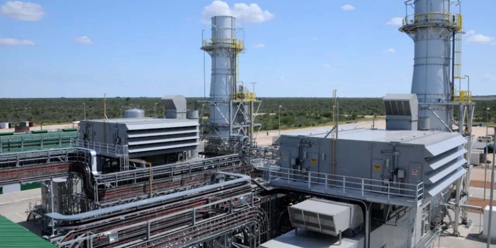

데이터센터 건설 회의에서 가장 먼저 사라지는 낙관은 전력표 앞에서입니다. 그래픽처리장치와 서버는 주문서로 설명할 수 있지만, 실제 부지는 송전망 연결, 변압기, 냉각, 예비 전원, 가스터빈 발전 계획이 맞아야 열립니다. GE 버노바는 이 전력표의 한가운데에 있는 회사입니다. 가스 발전, 전력망 장비, 풍력, 전력 서비스가 모두 연결되어 있어서 인공지능 전력 수요가 커질수록 이름이 자주 거론됩니다.
다만 이 회사는 단순한 인공지능 수혜주처럼 읽으면 오해가 생깁니다. 전력 수요가 커져도 가스터빈 슬롯이 부족하면 매출 인식은 늦어집니다. 송전망 장비가 부족하면 고객 프로젝트가 밀립니다. 풍력 사업의 손실 계약이 남아 있으면 좋은 주문도 이익으로 바로 이어지지 않습니다. 그래서 GEV를 볼 때는 “전기가 많이 필요하다”보다 “수주잔고가 어느 속도로 매출과 현금흐름으로 바뀌는가”를 먼저 봐야 합니다.
2026년 1분기 실적은 기대와 숙제를 동시에 보여줍니다. 회사는 주문 120억 달러, 매출 80억 달러, 순이익 2억6400만 달러, 조정 EBITDA 6억8600만 달러를 기록했습니다. 조정 EBITDA 마진은 8.6%로 개선됐습니다. 반면 영업현금흐름은 마이너스 9억1900만 달러, 잉여현금흐름은 마이너스 10억 달러였습니다. 전력 인프라 수요는 강하지만, 현금이 들어오는 시간표는 여전히 확인해야 한다는 뜻입니다.
전력 수요는 주문서가 아니라 납기표에서 시작됩니다

전력 인프라 기업은 매출보다 납기표가 먼저 움직입니다. 고객이 대형 데이터센터나 제조 공장을 짓기로 해도, 실제 전기는 터빈, 변압기, 스위치기어, 송전 연결, 운전 인력이 맞아야 공급됩니다. GE 버노바의 강점은 고객이 전력 수요를 빠르게 늘릴 때 가스 발전, 그리드, 서비스라는 여러 대안을 동시에 제시할 수 있다는 점입니다. 전기를 한 번에 많이 쓰는 고객에게는 이 조합이 중요합니다.
GE 버노바의 2026년 1분기 발표에서 가장 눈에 띄는 숫자는 주문 증가입니다. 주문은 전년 동기보다 32% 늘어난 120억 달러였습니다. 매출은 11% 늘어난 80억 달러였고, 조정 EBITDA는 전년 동기보다 크게 개선됐습니다. 이 조합은 수요가 실제 고객 예산으로 바뀌고 있음을 보여줍니다. 하지만 주문과 매출 사이에 시간차가 있기 때문에, 투자자는 수주잔고의 양보다 전환 속도를 봐야 합니다.
전력 인프라에서는 “팔았다”와 “돈을 벌었다” 사이가 깁니다. 대형 발전 설비는 제작, 설치, 시운전, 장기 서비스 계약까지 이어집니다. 그리드 장비도 고객 현장과 인허가 일정에 묶입니다. 좋은 주문이 들어와도 운전자본이 먼저 늘 수 있고, 프로젝트 선급금과 부품 조달이 현금흐름을 흔들 수 있습니다. 1분기 잉여현금흐름이 마이너스였다는 점은 바로 이 시간차를 확인시켜 줍니다.
가스터빈 슬롯은 매출보다 먼저 팔립니다
관련 영상
Inside GE Vernova’s Plan to Power the AI Boom
AI 데이터센터 전력 수요가 커질수록 시장은 원전, 재생에너지, 저장장치, 가스 발전을 함께 봅니다. 여기서 GE 버노바가 강하게 보이는 이유는 단기 전력 부족을 메울 수 있는 가스터빈과 장기 운전 서비스를 같이 갖고 있기 때문입니다. 고객 입장에서는 전력망이 완전히 바뀌기를 기다리는 것보다, 확실한 발전 용량과 유지보수 계약을 먼저 확보하는 선택지가 필요합니다.
가스터빈은 한 번 팔고 끝나는 제품이 아닙니다. 설치 뒤에는 장기간 부품, 정비, 성능 개선, 운전 지원이 따라붙습니다. 이 서비스 매출은 신규 장비보다 변동성이 낮고, 장비가 깔린 기반이 커질수록 반복성이 생깁니다. 그래서 GE 버노바의 질 좋은 성장 여부는 터빈 출하량만이 아니라 서비스 부문의 마진과 계약 기간에서 확인됩니다. 터빈 슬롯이 앞으로 몇 년치 고객 일정에 묶여 있다면 매출 가시성은 좋아지지만, 생산 병목과 납기 지연은 동시에 커질 수 있습니다.
투자자가 조심해야 할 지점은 시장이 이 병목을 너무 빨리 주가에 반영할 때입니다. 전력 수요가 강하다는 사실은 이미 많은 투자자가 알고 있습니다. 남은 질문은 회사가 그 수요를 가격, 선급금, 서비스 계약, 잉여현금흐름으로 바꿀 수 있는지입니다. 주문이 많아질수록 프로젝트 관리 능력과 공급망 비용 통제가 더 중요해집니다. 수요가 강한데 현금흐름이 따라오지 못하면 주가는 다시 높은 기대를 깎아낼 수 있습니다.
그리드 장비와 이튼·버티브가 같은 예산을 봅니다
GE 버노바를 볼 때는 혼자만 보면 안 됩니다. 같은 고객 예산을 보는 회사들이 있습니다. 이튼은 전력 배전, 회로 보호, 전기화 장비에서 강합니다. 버티브는 데이터센터 전력·냉각 인프라에 가까운 회사입니다. 블룸 에너지는 분산형 전력과 연료전지로 데이터센터의 전력 선택지를 넓히려 합니다. 이 네 회사는 서로 사업 모델이 다르지만, 고객의 고민은 하나입니다. 더 많은 전력을 더 빨리, 더 안정적으로 확보해야 합니다.
이튼의 2026년 1분기 매출은 70억 달러로 전년 대비 8% 늘었고, 유기적 매출도 7% 증가했습니다. 특히 Electrical Americas 매출은 34억 달러로 14% 증가했습니다. 이는 북미 전력 인프라 예산이 여전히 강하다는 신호입니다. GE 버노바의 그리드와 전력 장비 수요를 해석할 때 이튼의 숫자는 좋은 비교 기준이 됩니다.
버티브는 2026년 1분기 매출 20억 달러, 유기적 매출 성장 24%, 백로그 81억 달러를 발표했습니다. 데이터센터 전력과 냉각 장비가 실제 발주로 이어지고 있음을 보여줍니다. GE 버노바가 발전과 전력망의 큰 설비를 담당한다면, 버티브는 데이터센터 내부의 전력·열 관리 쪽에서 같은 투자 사이클을 확인시켜 주는 회사입니다. 두 회사의 주문과 백로그가 함께 강하면 전력 인프라 투자가 일시적 유행보다 구조적 예산에 가깝다고 볼 수 있습니다.
블룸 에너지의 2026년 1분기 매출은 3억2600만 달러로 전년 대비 39.6% 증가했습니다. 회사는 매출총이익률 29.6%, 영업현금흐름 1300만 달러도 발표했습니다. 블룸은 GE 버노바와 직접 같은 장비를 파는 회사는 아니지만, 데이터센터 고객이 전력 부족을 해결하기 위해 분산형 발전 대안을 검토한다는 점에서 의미가 있습니다. 전력망이 늦어질수록 고객은 중앙 발전, 그리드 장비, 현장 전원을 동시에 비교하게 됩니다.
풍력 적자는 사라지는지보다 남은 비용을 봐야 합니다
GE 버노바의 부담은 풍력입니다. 풍력 사업은 정책과 장기 전력구매계약의 도움을 받지만, 과거에 맺은 손실성 계약, 설치 지연, 품질 비용, 공급망 비용이 남아 있으면 흑자 전환이 늦어질 수 있습니다. 풍력 업황이 좋아진다는 말만으로는 부족합니다. 실제로 손실 계약이 얼마나 정리됐는지, 신규 수주가 더 좋은 가격으로 들어오는지, 서비스 비용이 안정되는지를 봐야 합니다.
이 점이 GE 버노바를 순수 전력 수요주로 보기 어렵게 만듭니다. 가스 파워와 전력망은 전력 부족의 직접 수혜를 받을 수 있지만, 풍력은 프로젝트 단위 원가와 품질 관리가 조금만 어긋나도 이익을 갉아먹습니다. 회사 전체 마진이 개선되더라도 풍력 부문이 다시 비용을 만들면 주가는 기대만큼 편하게 올라가기 어렵습니다. 그래서 다음 실적에서는 풍력의 신규 수주 가격, 손실 계약 처리, 현장 비용 안정화가 중요합니다.
GE 버노바의 좋은 시나리오는 세 가지가 동시에 맞는 경우입니다. 첫째, 가스터빈과 서비스가 높은 마진으로 매출을 밀어 올립니다. 둘째, 그리드 장비가 전력망 투자 사이클을 타고 꾸준히 성장합니다. 셋째, 풍력의 남은 비용이 더 이상 회사 전체 이익을 크게 흔들지 않습니다. 이 조합이 나오면 수주잔고는 단순한 기대가 아니라 미래 현금흐름의 원천이 됩니다.
반대로 위험한 시나리오는 주문은 좋은데 현금흐름이 늦는 경우입니다. 대형 프로젝트가 늘수록 운전자본이 커지고, 고객 현장 일정이 밀리면 매출 인식도 늦습니다. 공급망 병목이 남아 있으면 원가가 오르고, 풍력 비용이 예상보다 천천히 줄면 마진 개선 속도도 낮아집니다. 전력 인프라 테마가 강할수록 시장은 먼저 주가를 올려놓습니다. 이후에는 주문보다 현금이 따라오는지 확인하는 시간이 옵니다.
GE 버노바를 다음에 볼 때는 주문 120억 달러라는 숫자를 외우는 데서 멈추지 않는 편이 좋습니다. 가스터빈 슬롯이 몇 년치 수요를 담고 있는지, 서비스 매출이 얼마나 반복되는지, 그리드 장비 백로그가 매출로 넘어가는지, 풍력 손실이 줄어드는지, 그리고 잉여현금흐름이 플러스로 돌아서는지가 더 중요합니다. 이 다섯 가지가 같은 방향으로 움직이면 GEV는 전력 인프라 대표주로 더 설득력을 갖습니다. 하나라도 뒤처지면 강한 전력 수요가 곧바로 주주 현금흐름으로 이어진다는 가정은 다시 점검해야 합니다.